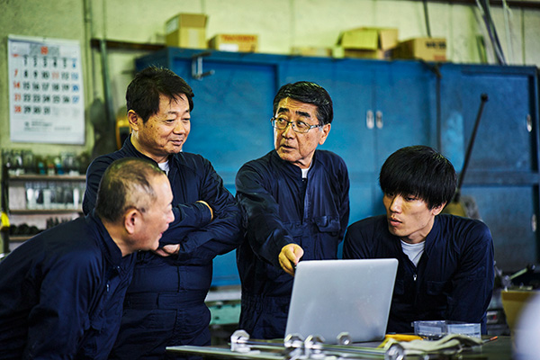
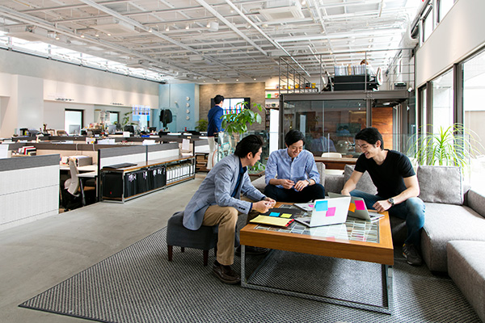
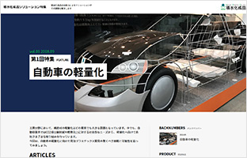
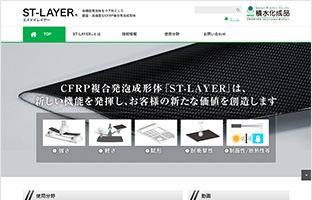
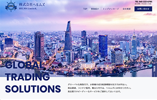

B2BサイトやりますB2B
- HOME
- B2Bサイトやります
B2Bサイトは、そのターゲットを法人顧客としていることからコンテンツにそのビジネスに関する専門性の高い内容を含むことや、ターゲットもそのビジネスに関わっていることなどに特徴があります。
私たちは、上場企業や中小、ベンチャーまで数多くのB2Bサイトを手掛けてきました。分かりやすいB2Bサイトを作るにはコンテンツを理解していることが必須です。クライアントからもらった原稿を並べるという作業に特化してしまうと、正確性に問題が生じたり、場合によっては写真と文章の組み合わせを間違えたり、頓珍漢なイラストを作ってしまったり、といった不具合を起こすこともあります。私たちは、サイトとの作り手である私たち自身がコンテンツを消化できていてこそ、読み手にも分かりやすい「伝わるサイト」を作れると考えています。
ちなみに、B2Bとは、ビジネスtoビジネスの略称で、自社ビジネスの顧客を一般消費者ではなく企業とするビジネスを言います。反対はB2C、ビジネスtoコンシューマー（消費者）です。
「伝わるサイト」を作るために
専門的なコンテンツを一般人とつなぐ
同じレベルの専門家同士で話をするかぎり、内容を理解するための前提条件や専門用語を相手が理解しているかどうかを心配することはあまりありませんが、専門性のレベルが異なる人、前提知識に不安のある人に伝える場合には、ターゲットとなるその人に理解できる条件を揃えてあげる必要があります。ビジネスの場合、多くの場合は買い手の情報量は売り手には及びませんし、その必要もありません。ですので、専門用語はそれを知らない人に分かる言葉に置き換えたり補足したり、前提条件があるのであればその説明を追加する、などが必要です。そういった補足説明が必要になりますから、それだけ情報量も増えます。それらを、ターゲットとなる人が理解するための順番に並べることなど、情報全体を構造化して表現することも大切です。
ちなみにターゲットとなる人ですが、すぐに
「専門家でない人 ＝ 一般人」
となるわけではありません。ある程度の知識のある人でないと顧客になり得ないという場合、その知識を持った人でないと分からない内容のサイト作りをすることで、ターゲット以外からの問い合わせを減らす効果を狙うこともあります。

ビジネスや商品も取材しライティング
取材してコンテンツを作るには、その内容に適したライターが必要です。取材した内容を文章にするには、それを聞いて理解し形にできるまでのベースが必要だからです。内容が観光であったり、飲食などの生活関連であったりすれば、ベースを問われませんが、例えば半導体の専門的な内容を取材する人がICやLSIといった言葉を知らなければ、ライティングは難しいでしょう。エンジニアリングの世界であれば、技術の進歩発展が歴史的背景、特に戦争との強い関連を持っていたりします。そういった理解のベースが、取材してコンテンツを文章化するために必要です。
企業の雰囲気やらしさをデザイン化
会社の理念やトップの言葉などを踏まえ、実際のオフィスを訪問してみたり、環境が許せばビジネスの現場に赴いて、その企業独自の個性、雰囲気、らしさを感じ取ったり、クライアントと協議をしながらビジュアルデザインとして形にしていきます。
歴史ある企業であれば、その長い時間の中にも個性を強化したり決定づけたりした出来事があります。そういう過去を踏まえることで、より的確に見た人に訴える力を持つ分かりやすいデザインを作ることができます。

既存のバラバラなコンテンツを統一
既存のサイトがツギハギを繰り返していて、あるいは、部署別や製品別にサイトが作られていて、全体が不統一の場合があります。また、新規に統合したサイトを作ろうという場合でも、各現場が既存の資料を原稿として提出してくることもあります。こういった場合、それらを寄せ集めただけでは、まとまりのある分かりやすいサイトになりません。
私たちは、そういったバラバラのコンテンツ素材に対して、積極的にリライトを行っています（もちろん、クライアントの許可を取ります）。文末や用語の統一だけでなく、サイト内での標準的なフォーマットを意識して論理構成を単純化したり、パラグラフを細かく分けて見出しを立てたり、ページを分割したりして、分かりやすく改変します。
忙しい広報担当者に代って情報発信
広報を担当すると、社内の各部署とのスケジュールや表現の調整、情報を集約するための指示出し、提出された内容の確認などで大変忙しくなります。そして、それが情報発信、サイトへの情報掲載にとって障害になることがあります。
私たちは、そのお忙しい広報担当者に代って情報発信の作業を行います。最低限、載せるべき情報やその候補を挙げて頂ければ、見出しや文末などのフォーマットを整えたり、CMSを使って（あるいはコーディングして）ページにしたり、といった情報発信作業を行います。また、スピードを重視する場合や細部までご自身で詰めたい先生方向けには、難しいコードなどを知らなくても扱えるようにCMSをチューニングして提供いたします。
B2Bサイト制作事例
積水化成品工業様ソリューション特集
プロジェクト

現時点で自社を知らない人や自社製品との接点のない会社に対して、製品度乳や協力関係構築を目指したマーケティングの仕掛けを構築したいというご要望にお応えして、まだ見ぬ未来のお客様にとっての困りごとや課題のキーワードで検索されることを想定したソリューション特集のサイトを構築しました。ライターを立てて取材を行い、文章の書き起こしからお手伝いしました。
積水化成品工業様製品別サイト
プロジェクト

CFRP(炭素繊維強化プラスチック)に得意技術である発泡体を合わせて複合材料とするという新しい材料製品の紹介サイトです。想定される使用分野情報に加え、未知の分野での利用開拓を進めたいので技術情報も提供しています。
ヘルムズ様
プロジェクト

アジアはじめグローバルに貿易を展開されている商社様のサイト。制作にあたっては入念な業界・競合調査とSEO対策を行い、シングルページながらユーザーに使いやすく検索エンジンに有効なサイト制作を目指しました。運用による情報の増強化を見据え、サイト展開を進行中です。クライアント様の社風を汲み、堅実さの中にもフレッシュな勢いを感じさせるサイトデザインで大変お喜びいただいています。